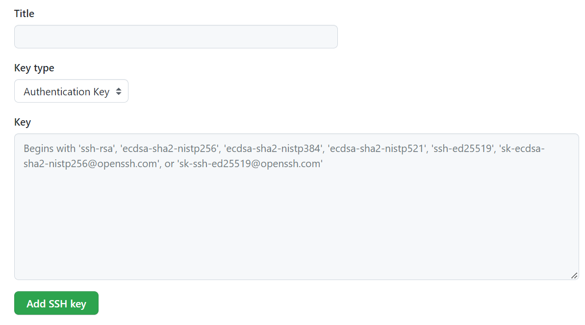
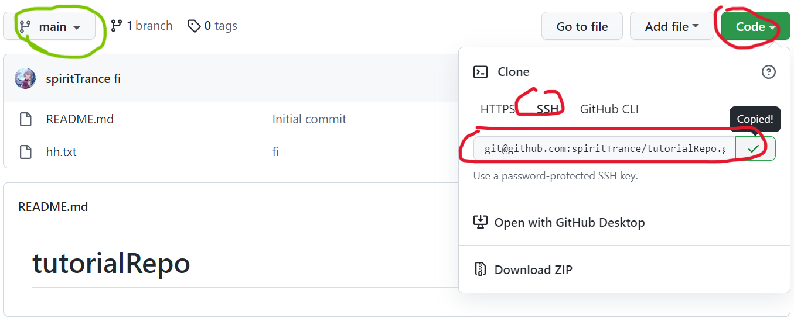
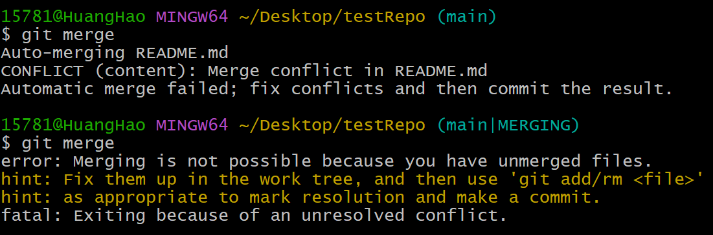
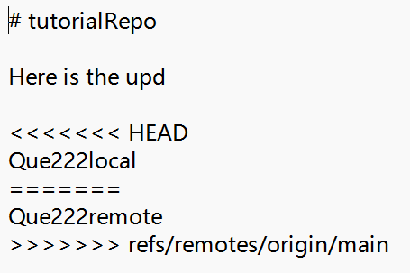

本文不准备介绍原理（但可能会附上链接），仅介绍使用方法和常见的坑（作者遇到的），以便于快速上手
目录
Git初步
本节介绍单人从git开始到拥有一个完整的仓库，并如何将本地数据同步上去。
Git：版本控制工具；GitHub/Gitee：社交代码托管平台
因此将代码托管到github和gitee的步骤大同小异。github因为连接不稳定（有时登不上），gitee成为了替代品；但gitee出现了奇怪的限制（比如
document.s**e()），所以本文以github为例，介绍如何使用Git及托管平台。
准备步骤
开始之前，您需要：
2.下载git工具，作者用的是2.37.3版本，安装过程中的一大堆勾选项可以一通忽略掉，无脑next即可。
3.可以选择下载TortoiseGit，这是Git的图形化操作工具，此为备选项。
准备好后，您可以无脑复制代码框的内容。首先右键，点击Git Bash Here，打开终端，输入以下内容（引号内内容替换为注册账号时所用信息即可，分别为昵称和邮箱）：
git config --global user.name "yourName"
git config --global user.email "yourEmail@email.com" 之后在本地创建ssh key：
ssh-keygen -t rsa -C "yourEmail@email.com"之后连续敲击三次回车键，生成两个隐藏文件，windows11放置在该路径（或者留意提示框）：C:\Users\UserName\.ssh，找到id_rsa.pub文件，复制里面的内容。
然后登录托管平台，进入设置项目，在侧边栏找到SSH
and GPG keys，添加SSH key（点击New SSH
key），在Key里面粘贴id_rsa.pub文件里的内容，Title随意取，添加即可。

自此，一切准备步骤完成。
仓库创建及同步
开始之前，先强调一个原则：先拉后推，尤其是多人协作的时候。
好了，下面介绍如何创建仓库：
远程仓库创建：
- 登录github，点击个人头像，在下拉菜单里找到Your repositories，这里就是你的远程仓库了。
- 然后找到New，开始创建你的仓库，按照其要求填写即可。（注意：如果勾选需要README.md，则分支名为main，否则为master）
- 关于license，请看这篇文章：License许可证怎么选择？，一般来说初学者选择MIT协议，可以规避很多问题。
本地仓库初次创建与连接：
在本地新建目录，在目录下面打开Git bash，进行以下输入：
git clone <remoteRepositoryPath> <localRepositoryPath>
touch HelloGitHub.txt
git add .
git commit -m "First upd"
git push origin <remoteRepositoryBranch>git clone：第一个参数remoteRepositoryPath一般为git@github.com:<昵称>/<仓库名>.git，或者直接在下图红色圈处复制即可；第二个参数是本地仓库的路径（找一个目录即可），例：git clone git@github.com:spiritTrance/tutorialRepo.git C:/Users/15781/Desktop/testRepo

-
touch:
linux新建文件的指令，为了演示效果加的，可忽略。-
git add：将指定文件加入本地仓库，后面接一个点表示将本目录下的所有文件加入本地仓库-
git commit -m：编写提交备注信息-
git push：第二个参数是远程仓库的分支名，具体在上图绿色圈处查看。注意：分支名一般是main或者master，以绿圈为准。前面提过原因。这也是为什么选择git
clone而不是优先在本地初始化仓库git init的原因）
仓库更新：
再次强调，先拉后推！
执行以下命令：
git fetch
//执行修改
git add .
git commit -m "update Message"
git merge
git push origin <远程仓库分支名>git fetch：首先不推荐直接用git pull的方式，原因见此。两个步骤下来，可能提示有冲突，但先不管。git add：将修改过的文件再加一次。git merge：将fetch来的和本地的做一次合并，此处可能会出现冲突。- 剩下两条指令在上面介绍过，其中add一般添加改动以及新增的文件。
冲突解决：
有时候会很不幸，因为各种原因，在上面最后一条执行完后会出现冲突问题，如下图所示：

此时你需要打开冲突的文件（本地文件图标右下角为黄色感叹号的文件）：

可以看到图中有两个来源的信息，需要将带有<<<和>>>的一行和===的一行删除，可以选择两个来源都保留，或者只保留一方，或者都删掉，均可。之后重新走一遍add,commit,merge,push的流程即可（注意按顺序）
至此，你应该学会了最基本的操作。
多人协作
基本步骤
冲突解决
见Git初步-仓库创建及同步
版本管理
作为版本管理工具，最重要的功能肯定是版本管理啦。（待补）
分支管理
合并分支
（强行合并分支，待补）:q!
疑难杂症
- git push时有警告，说footprint更改，还需要输入密码，但是无论怎样都是错的，怎么办？
- 看这个博客解决解决Github拒绝授权问题Permission
denied, please try again
# 参考资料
github简明资料
猴子都能懂的git入门（这个貌似在打backlog的广告，注意分辨）